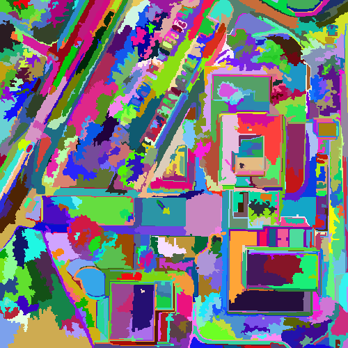
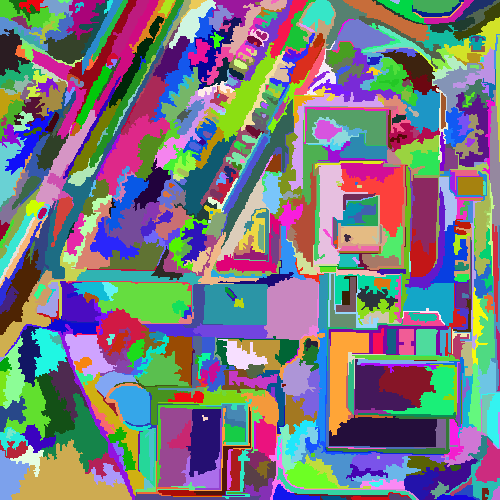

Region merging algorithms have proven to be an effective approach for image segmentation, especially for OBIA (Object-Based Image Analysis) in remote sensing. The basic approach of a region merging algorithm is to consider at the beginning every pixel of the image as an initial region. These regions are then merged iteratively to form the objects of the image. Region merging algorithms vary depending on the criteria used to decide whether two adjacent regions have to be merged and the heuristic to find for a region, its adjacent region to be merged.
This section describes the common parameters of a region merging algorithm that have to be specified by the user when using an algorithm from the GRM library.
First, the user has to indicate the path to the image to segment. The following format are accepted with the otb library: (.jpg, .png, .tif). The method SetInputFileName(filename) of the generic class RegionMergingAlgorithm has to be called:
segmenter.SetInputFileName(inputFileName);
The proposed outputs of the GRM library are a label ouput image, a clustered output rgb image
and a contour output image.
segmenter.SetClusteredImageFileName(clustered_image); // clustered image
segmenter.SetLabelImageFileName(label_image); // label image
Specific parameters to the region merging algorithm are needed:
segmenter.SetParam(params);
The declaration and initialization of the variable params is specific to a criterion
and will be described later.
As mentioned previously, two heuristics are proposed in the GRM library: LMBF
and BF.
By default, the merging process is using a combination of both heuristics. The first
75 iterations are done with the LMBF heuristic and then, if there are still regions to
be merged, we switch with the BF heuristic and achieve the segmentation until there are no merges
anymore.
The user has the possibility to change this configuration by tuning the number of iterations
when using the LMBF heuristic and by activating or desactivating the use of the
BF heuristic.
segmenter.SetNumberOfIterations(30);
segmenter.SetDoBestFitting(true);
In this example, we choose to process the 30 first iterations using the LMBF
and then we switch with the BF heuristic to achieve the segmentation.
segmenter.SetNumberOfIterations(40);
segmenter.SetDoBestFitting(false);
It is possible to use only the LMBF heuristic to process the segmentation by
passing an "infinite" number of iterations:
unsigned int max_iter = std::numeric_limits<unsigned int>max();
segmenter.SetNumberOfIterations(max_iter);
Or to use only the BF heuristic:
segmenter.SetNumberOfIterations(0);
segmenter.SetDoBestFitting(true);
This criterion is based on spectral and shape information. The spectral information
is the standard deviation of the spectral intensities of the pixels within the regions
and the shape information is based on the degree of smoothness and compactness of the
region shapes.
Two weight parameters allow to configure the relative importance of the spectral and
shape information. Their values range from 0 to 1.
Finally, in order to limit the under-segmentation, the user has to choose a value for
the scale parameter which influences the size of the resulting regions. Its value has
to be positive and depends on the nature of the objects to be extracted. A small value
leads to small objects and a large value leads to larger objects.
This criterion was first introduced in this publication.
The source code for this example can be found in the file:
grm/src/Applications/RegionMergingSegmentation.cxx
Let's look at the minimal code required to use this algorithm. First the following header defining the Baatz algorithm class must be included:
#include "lsrmBaatzSegmenter.h"
Then, the headers to handle an otb vector image have to included:
#include <otbImageFileReader.h>
#include <otbVectorImage.h>
We declare the image type based on a particular pixel type and dimension. In this case the
float type is used and the dimension of the image is obviously 2.
typedef float PixelType;
typedef otb::VectorImage<PixelType, 2> ImageType;
Next, we declare the Baatz & Schäpe region merging algorithm based on the image type
we have just declared.
typedef lsrm::BaatzSegmenter<ImageType> SegmenterType;
We declare and construct the parameters specific to the Baatz & Schäpe criterion, i.e.,
the spectral weight, the shape weight and the scale parameter.
BaatzParams params = {0.5, 0.5, 40};
Then we construct our segmenter.
SegmenterType segmenter;
We pass the common parameters described previously.
segmenter.SetParam(params);
segmenter.SetThreshold(scale);
segmenter.SetInputFileName(input_image);
segmenter.SetClusteredImageFileName(clustered_image);
segmenter.SetLabelImageFileName(label_image);
And finally we run the segmentation process.
segmenter.RunSegmentation();
Using the test image provided with the grm library in the directory img/, we obtain the resulting clustered image with a scale value of 40, a spectral weight of 0.5 and a shape weight of 0.5.
 
